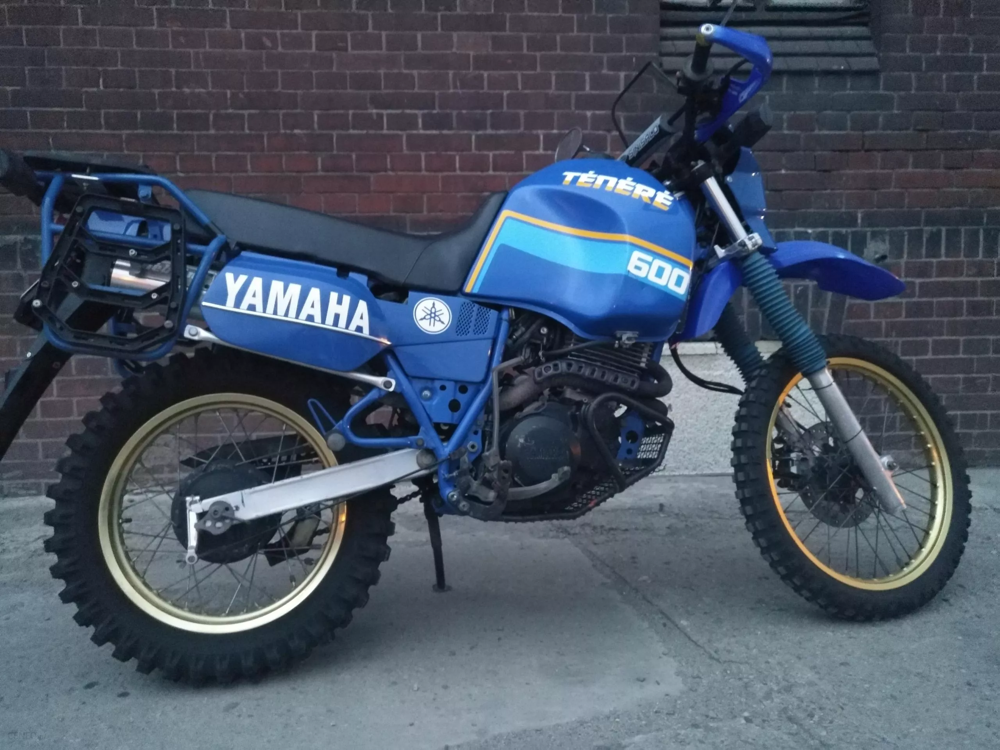

- Moc max. 45 KM / 6500 rpm. 48 Nm / 5500 rpm. 160 km/h. 15 L.
- Typ. czterosuwowy, jednocylindrowy, SOHC, chłodzony powietrzem. 595 ccm. 8.5:1. gaźnik Y26PV.
- Skrzynia biegów. łańcuch.
- Wymiary (długość, szerokość, wysokość) 2295 x 865 x 1205 mm. 1440 mm. 176 kg. stalowa, typu Diamond.
Yamaha XT 600 to motocykl klasy enduro produkowany przez japoński koncern Yamaha Motor Company w latach 1984-2003. Model XT 600 stał się najpopularniejszym motocyklem enduro swoich czasów. Yamaha XT 600 została wyposażona w jednocylindrową jednostkę napędową o pojemności skokowej 595 ccm. Chłodzony powietrzem i olejem silnik czterosuwowy posiada rozrząd SOHC (cztery zawory na cylinder sterowane przez jeden wałek rozrządu), gaźnikowy układ zasilania (średnica gardzieli - 28 mm), zapłon TCI i elektryczny rozrusznik. Serce modelu XT 600 generuje moc maksymalną 45 KM i maksymalny moment obrotowy 50 Nm, które trafiają na tylne koło za pomocą manualnej skrzyni biegów o pięciu przełożeniach, klasycznego łańcucha napędowego i mokrego sprzęgła wielotarczowego. Dzięki niskiej masie własnej (na sucho, bez płynów eksploatacyjnych i paliwa, Yamaha waży tylko 156 kilogramów) uzyskano zużycie paliwa na bardzo atrakcyjnym poziomie. Średnie spalanie 5 l/100 kilometrów sprawia, że na zbiorniku paliwa o pojemności 15 litrów użytkownicy będą mogli pokonać 300 kilometrów na jednym tankowaniu.